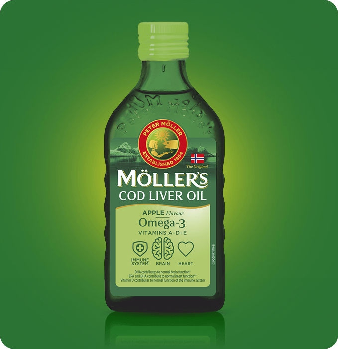

Möller's Omega-3 ulje jetre bakalara, ukus jabuke
Klasično Möller's ulje jetre bakalara iz Norveške, sa prirodnom aromom jabuke.
Möller’s Omega-3 ulje jetre bakalara sa ukusom jabuke je dodatak ishrani koji predstavlja izvor omega-3 masnih kiselina (eikozapentaenska kiselina: EPA i dokozaheksaenska kiselina: DHA) i vitamina A, D, i E.
EPA i DHA doprinose normalnoj funkciji srca. Koristan efekat se postiže dnevnim unosom od 250 mg EPA i DHA. DHA doprinosi održavanju normalne funkcije mozga i vida. Koristan efekat se postiže dnevnim unosom od 250 mg DHA. Vitamin D doprinosi normalnoj funkciji imunog sistema i očuvanju kostiju. Vitamin A doprinosi održavanju normalnog vida i funkcije imunog sistema. Vitamin E doprinosi zaštiti ćelija od oksidativnog stresa.
Ne sme se prekoračiti ukupni dodatni dnevni unos od 5 g EPA i DHA.
Prečišćeno ulje jetre bakalara (riba), prirodna aroma jabuke, DL-alfa-tokoferilacetat, antioksidans: ekstrakt bogat tokoferolima, retinil-palmitat, holekalciferol.
| Aktivni sastojci: | U 5 ml - 10 ml | %NRV* |
|---|---|---|
| Omega-3 masne kiseline - DHA - EPA | 1,12-2,24 g - 510-1020 mg - 370-740 mg | / |
| Vitamin E (α-TE**) | 3-6 mg | 25-50% |
| Vitamin A (RE***) | 250-500 μg | 31-62% |
| Vitamin D | 10-20 μg | 200-400% |
* NRV - nutritivna referentna vrednost; α-TE - alfa tokoferol ekvivalenti; *RE - retinol ekvivalenti
- Deca od 3 do 11 godina: 1 kafena kašika (5 ml) jednom dnevno.
- Deca starija od 11 godina i odrasli: 2 kafene kašike (10 ml) jednom dnevno.
Preporučene dnevne doze ne smeju se prekoračiti. Proizvod nije namenjen osobama koje su preosetljive na ribu ili bilo koji sastojak proizvoda kao ni osobama sa hemofilijom. Oprez i prethodna konsultacija sa lekarom je neophodna kod osoba koje su na antitrombotskoj terapiji. Obustaviti primenu proizvoda 7 dana pre operativnog zahvata. Trudnicama i dojiljama se pre primene proizvoda preporučuje savet lekara. Ne koristiti istovremeno sa drugim proizvodima koji sadrže vitamin D.